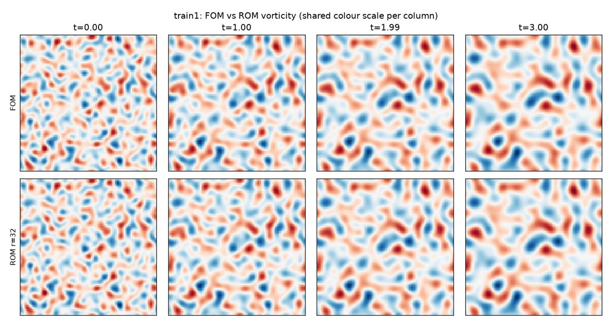
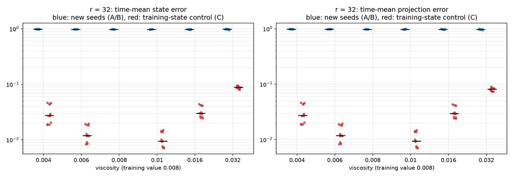

CFD · Reduced-order modelling
My contribution
I implemented and verified a Fourier pseudo-spectral solver, built POD-Galerkin and DEIM reduced models, and ran a pre-registered validation that corrected a dealiasing defect and tested generalisation, stability and cost.
Verified resultsReleased v1.0.0 · pre-registered validation
In sample, the rank-32 reduced model reproduces its training trajectories to a mean error below 10⁻⁶; on 10 new initial conditions it fails at every tested viscosity (median error 0.98), because new flows lie outside the training subspace.
Research question
I solved the two-dimensional incompressible Navier–Stokes equations on a doubly periodic domain, in vorticity–streamfunction form (∂tω + u·∇ω = ν∇²ω, −∇²ψ = ω), and asked how far a reduced model built from a few simulations can reproduce, and predict, freely decaying turbulence.
Methodology
The full-order solver uses a Fourier pseudo-spectral discretisation with the 2/3 rule implemented as the exact alias-free condition 3|m| < N, an FFT Poisson solve, and integrating-factor RK4 (viscosity exact, advection explicit). The reduced model is a POD-Galerkin projection onto modes from four training trajectories (N = 96), with a precomputed quadratic tensor, plus two DEIM hyper-reduction variants. Every error is split exactly into a projection (subspace) part and a reduced-dynamics part. The generalisation, failure-mechanism, stability and timing studies followed a protocol I committed before running them.
Experimental setup and verification
Taylor–Green relative error 7.0 × 10⁻¹⁵ and a symbolically derived manufactured solution at 3.4 × 10⁻¹⁵ with fourth-order temporal convergence. Checking the nonlinear term against an exact zero-padded convolution exposed a defect: the earlier cutoff kept an aliased endpoint mode on grids divisible by three (1.5 to 5.4% coefficient errors). After the fix it agrees to 7 × 10⁻¹⁶, and the manufactured solution is exact from N = 19. The reduced operators agree with independent references to 3 × 10⁻¹⁵, and the corrected Galerkin model conserves reduced enstrophy exactly (but not kinetic energy). The headline results reproduce bitwise from a fresh clone.
Quantitative findings
On its own training trajectories the rank-32 model reaches a mean relative error of 8.7 × 10⁻⁷ (maximum over time 4.5 × 10⁻⁶). On 10 new random initial conditions it fails at every tested viscosity: the median error is 0.98 at the training viscosity and at five other viscosities from half to four times that value. Started from training states instead, the same model transfers across those viscosities with median errors of 1 to 9%. Only about a fifth of a new flow (median 18 to 20% of its norm) lies inside the span of the training snapshots, and in the single-seed evaluation this projection gap accounted for at least 99% of the squared error.
Failure analysis
Aligning each new flow with the training span by the best periodic shift, rotation or reflection lowers the error only from 0.98 to 0.94, and the energy spectrum shows no relation to the error, so neither translation nor spectral content explains the failure. Giving a new flow the Fourier phases of a training flow lowers its error to 0.61, which points to phase structure, but this did not meet the threshold I set in advance, so the phase explanation remains inconclusive. These alignment tests are diagnostics that use the target flow itself, not predictive models.
Stability and performance
Over horizons up to ten times the training window (t = 30) all 72 runs stayed bounded, with a non-increasing reduced state and no time-step sensitivity; this is bounded behaviour over the tested horizons, not a general stability proof. Accuracy, however, is limited to the training window: the in-sample error grows to 0.29 when averaged to t = 30. On an Apple M3 Pro (N = 96, 300 time steps, one thread, NumPy), the rank-32 tensor model ran about 9 times faster than the full solver; at matched accuracy, DEIM was a further 4.4 times faster at rank 32 and 1.5 times at rank 16, but slower than the tensor model at rank 8.
Limitations
One training family (four trajectories, one viscosity, one spectral peak), so every other viscosity is an extrapolation; unforced decaying flow on a periodic domain at N = 96; timings on one machine. Vorticity-based POD does not conserve kinetic energy in the reduced nonlinear term, and DEIM approximates the nonlinear term poorly on states unlike its training data.




Reproducibility
I have linked the source code and available experiment records so others can inspect how the work was done. The findings are specific to the setup described here.